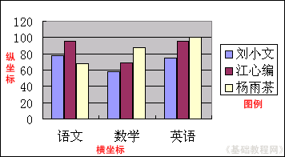
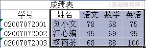
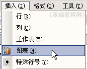
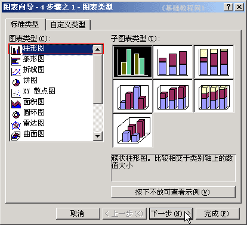
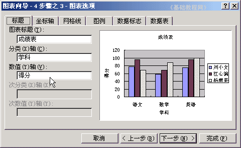
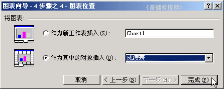
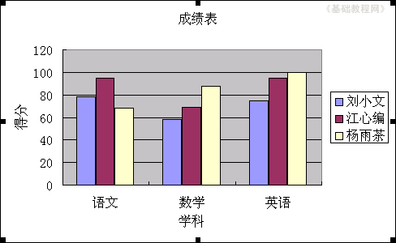

Excel 基础入门教程
创建图表 返回
这一节我们来学习图表，用图像来显示数据，更让人一目了然，便于对比和区分，下面我们来看一个练习；
1、启动Excel
1）点击“开始－所有程序－Microsoft－Microsoft Office Excel 2003”；
2）出现一个满是格子的空白窗口，这就是一张电子表格了，第一个格子看着边框要粗一些，处于选中状态；

2、Excel窗口
1）点菜单“文件－打开”命令，打开上次的“成绩表”文件；
2）在这个表格中，有三个同学，每个同学又有“语数外”三门成绩，可以做成一个图像，然后对比一下；
3）图表一般用坐标轴来表示，横坐标是X轴，纵坐标是Y轴，还有类似地图的图例和标题等，下面我们来看一下怎么制作一个图表；

3、创建图表
1）从姓名开始一直拖动到右下角的100，框选中这些有用的数据，序号和学号可以不必要；

2）点菜单“插入－图表..”命令，弹出一个“图表向导”面板；

3）第一页是选择图表类型，一般有柱形、条形、折线，这儿点“下一步”按钮，用默认的柱形；

4）第二页是数据区域，我们选中的是从“姓名－100”这一块，每个学科一块，直接点“下一步”按钮，如果选“列”就是按姓名；

5）第三页是标题标注，在左边分别填上“成绩表”、“学科”、“得分”，点“下一步”按钮；

6）第四页是图表位置，默认放在当前工作表中，单击“完成”，有时也选择插入到新工作表中；

这样就创建好一个图表，每个颜色代表一个同学，可以从颜色上来比较三个同学的成绩；

保存一下文件；
本节学习了Excel中如何创建一个图表，如果你理解并成功地完成了练习，请继续学习下一课内容；
本教程由86团学校TeliuTe制作|著作权所有
基础教程网：http://teliute.org/
美丽的校园……
转载和引用本站内容，请保留版权信息和本站链接。